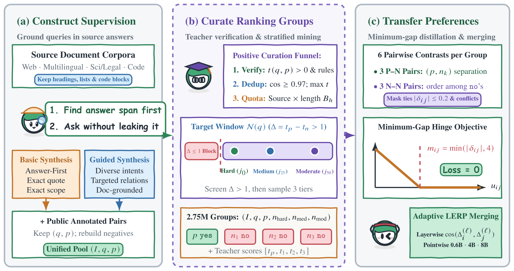
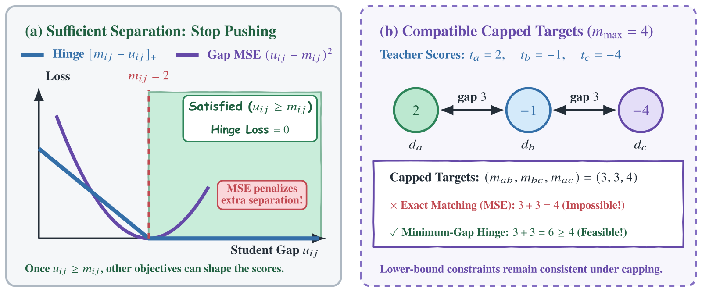
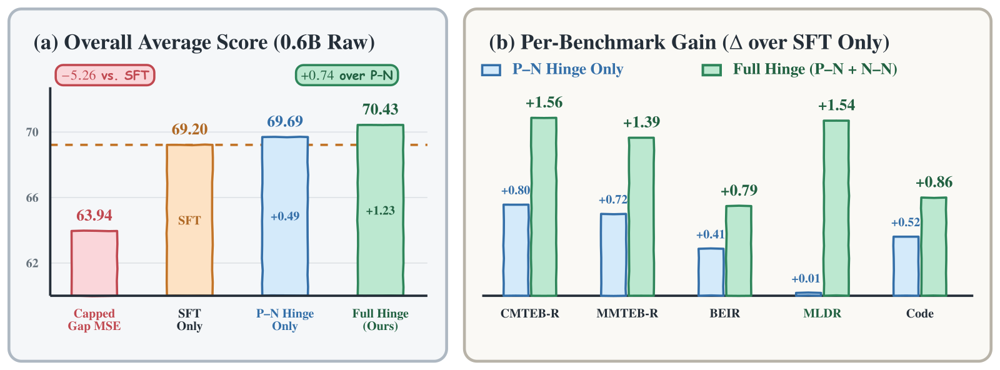

目录 · 7 节
1从一条 query 到一组训练样本的六步2先定答案，再写 query3负例先筛掉假负例，再分三档4训练时给每对文档设一个最低分差5为什么不直接回归老师的分差？6换成下限约束，比只用 yes/no 高 1.23 分74B 学生超过 8B 老师，要算上模型合并只用「相关」「不相关」两种标签训练 reranker，模型很难在不相关的文档之间分出高低；腾讯元宝搜索的 Yuanbao-Reranker 补上这一步的办法，是请一个更强的老师模型给文档打分，再规定：老师认为更相关的那篇，学生模型给的分数至少要高出一段距离，高出更多也不罚。
这篇论文的评测先用 embedding 检索器从语料里取回一批候选（每个 query 取 100 篇），再由 reranker 把 query 和每篇候选一起编码、逐篇打分、重新排序。这篇论文来自腾讯元宝搜索，作者以 Qwen3 为底座训练了 0.6B、4B、8B 三个规模的 reranker，统称 Yuanbao-Reranker。全文用同一条示意 query：「员工在试用期内被证明不符合录用条件，公司以此为由辞退，需要支付经济补偿吗」。候选里，文档 A 正面回答了这个问题，B 讲试用期内解除合同的条件，C 讲经济补偿金怎么计算，D 讲试用期工资不能低于多少。
难就难在，B、C、D 和 A 都在谈试用期、辞退和补偿，reranker 只看关键词几乎分不开这四篇。reranker 要核对的是文档有没有满足 query 里的具体条件：这里的条件是「试用期内、以不符合录用条件为由」，要的答案是「付不付补偿」，只有 A 同时满足。训练这样的模型需要大量「同话题但答不上」的样本，而公开标注数据覆盖的领域和问法都比较窄。
训练 reranker 时常见的几个环节是：让大模型读一篇文档、替它写一条 query 来扩充数据，把检索器为这条 query 取回的其他文档当负例（不相关的例子），再给每篇文档标 yes（相关）或 no（不相关），做监督微调（SFT），让模型读完 query 和文档后输出 yes 或 no。论文对这几个环节分别指出了问题，第一个出在数据上。大模型可能漏掉条件，写成「辞退员工要付经济补偿吗」，这样讲普通辞退、没提试用期的文档也答得上，训练出来的模型学不到要核对「试用期」这个条件；大模型也可能把答案写进问题，写成「为什么试用期不符合录用条件被辞退不用付补偿」，模型只靠字面重合就能找到 A，学不到判断文档有没有给出答案。检索结果里还可能混着没人标注的相关文档，比如另一篇法律问答 E 也答了这个问题，却被当成负例惩罚，这种文档叫假负例。
标签本身也不够用。B、C、D 全标 no，SFT 只告诉模型这三篇都不相关，没有告诉模型 B 比 D 更接近这个问题：B 讲的正是试用期内怎么解除合同，D 只是同样提到试用期。最接近的补救办法是请一个现成的强 reranker 当老师，要求正在训练的模型（学生）给两篇文档打出的分差，尽量等于老师给这两篇的分差，这种做法叫回归老师的分差。可是学生如果已经把 A 和 D 分得比老师还开，回归目标反而会把这两篇的分差往回拉。
这篇论文把数据和训练目标都改了。数据这边，作者让大模型先从文档里定下答案再写 query，用老师分数筛掉疑似假负例，再给每个 query 配三个难度不同的负例。训练这边，作者保留 yes/no 标签，再加一条约束：任意两篇文档里，老师打分更高的那篇，学生打分也要高出至少一段距离，高出更多不罚。这条约束不只用在 A 和负例之间，B、C、D 彼此之间也这样比。最终 4B 模型在中文、多语言、英文、长文档、代码五组检索评测上的平均 nDCG@10（衡量前 10 名排得好不好的指标，按百分制报告）是 73.63，超过了当老师的 Qwen3-Reranker-8B 的 72.68。
从一条 query 到一组训练样本的六步
下面这张表是全流程。前五步都在训练阶段完成。上线时只部署第 5 步合并出来的一个模型，它对每篇候选单独打分，用法和普通 reranker 一样。
| 步骤 | 输入 | 操作 | 产出 | 只在训练侧 |
|---|---|---|---|---|
| 1. 合成 | 没有标注的文档 | 先定答案和原文依据，再写 query | query 和正例文档 | 是 |
| 2. 筛选 | 合成出来的配对 | 老师验证、query 去重、按来源和长度分配名额 | 留下的配对 | 是 |
| 3. 挖负例 | 真实语料的检索候选 | 排除疑似假负例，按难度取三篇 | 1 正 3 负的一组样本 | 是 |
| 4. 训练 | 一组样本和老师分数 | yes/no 交叉熵加两两最小间隔约束 | 三个规模的模型 | 是 |
| 5. 合并 | 同一规模、用不同数据配比训出的多个模型 | 逐层按权重合并参数 | 一个模型 | 是 |
| 6. 上线 | query 和一篇候选 | 算 yes logit 减 no logit | 这篇文档的分数 | 否 |

老师是现成的 Qwen3-Reranker-8B，老师分数等于它输出的 yes logit 减 no logit，分越高表示这篇越相关。走完前三步，试用期这条 query 变成下面这组样本（示意），后面所有机制都作用在它上面。
| 文档 | 内容 | 标签 | 老师分数 | 负例档位 |
|---|---|---|---|---|
| A | 正面回答试用期辞退付不付补偿 | yes | +5 | 正例 |
| B | 试用期内解除合同的条件 | no | +2 | Hard |
| C | 经济补偿金怎么计算 | no | −1 | Medium |
| D | 试用期工资不能低于多少 | no | −4 | Moderate |
先定答案，再写 query
常见做法是大模型读完文档直接写 query。可 query 和文档共享关键词，不等于文档答得上这个 query。所以作者把顺序反过来：大模型读完全文，先确定一个完整的答案，再逐字摘出支持这个答案的原文，最后才写 query。写 query 时必须保留实体、时间、辖区这些条件，答案留在文档里。试用期 A 文档走完这一步，产物大致长这样（示意，字段有删减）：
{
"status": "AUTHORED",
"query": "员工在试用期内被证明不符合录用条件，公司以此为由辞退，需要支付经济补偿吗",
"answer_proposition": "以试用期不符合录用条件为由解除合同的，公司无需支付经济补偿",
"supporting_passages": [
{"unit_id": "E1", "supporting_quote": "（文档 A 里逐字摘出的原文片段）"}
],
"no_answer_leakage_check": true
}status 是这条样本的处理结果，AUTHORED 表示成功写出了 query；no_answer_leakage_check 记录 query 有没有通过「不泄露答案」的检查。这一步有两项彼此独立的检查。一项要求答案完全由这篇文档支持，范围和 query 一致；另一项要求每段摘录都能在文档原文里逐字找到，而且只出现一次。逐字比对只能证明摘录确实出自原文，答案和 query 对不对得上靠的是前一项，后面老师打分还会再把一道关。摘不出原文的文档会被标成 SKIPPED 跳过。另一路合成先选定信息需求的类型，比如排查软件故障、查适用的法规，再按类型写 query，同样遵守先定答案、摘原文、不把答案写进 query 的规则。
作者只合成正例，负例全部来自真实语料。初步实验里，合成负例文档和合成负例 query 都没有提升排序效果。作者给的理由是，合成的负例文档离 query 太远就太容易，离得太近又可能真的答对了，而且大模型写的文本带有风格痕迹，正在训练的 reranker 靠文风就能认出负例，不必去读内容。
合成出来的 query 和正例配对还要过三道筛。第一道是验证：老师给这对 query 和正例打的分必须大于 0，也就是老师判断 yes 比 no 更可能，文档只答对一部分、分数不够的配对被去掉。第二道是去重：两条同语言 query 的向量余弦相似度不低于 0.97 就算重复，互相重复的 query 归成一簇，一簇里只留老师分数最高的一条。第三道是分配名额，处理文档长度和来源的偏向：短百科段落的老师分数普遍高于长技术文档，全局取最高分会让短而容易的来源占比过高。
示意：某个领域和语言下有 100 个候选，短、中、长文档分别是 50、30、20 个，预算是 10 个名额。全局取前 10 名，可能 10 个全是短文档。按比例分名额后是 5、3、2，长文档保证拿到 2 个名额，每一档内部再按老师分数取最高的。这说明老师分数只负责同一档内部比高低，不同档之间的比例由名额决定。
合成数据的贡献是这样量出来的：作者用 0.6B、还没做模型合并的版本，比较只用公开标注和加上合成数据的结果，两边的负例选法和训练目标相同。分数记作 Avg.，它是五组评测（下文称五个面板）nDCG@10 的等权平均，五个面板分别测中文（CMTEB-R）、多语言（MMTEB-R）、英文（BEIR）、长文档（MLDR）和代码（MTEB-Code）检索。
Avg. 从 68.77 涨到 70.43，多了 1.66。其中 MLDR 涨 3.82，MMTEB-R 涨 2.37，CMTEB-R 和 BEIR 都只涨约 0.4。这说明合成数据补上的主要是公开标注缺的长文档和多语言场景，在中文和英文这两个公开标注已经覆盖得不错的面板上，它带来的提升很小。
负例先筛掉假负例，再分三档
现在看 B、C、D 是怎么选出来的。作者用检索器为每个 query 从真实语料取回候选，用老师给每篇打分，再算正例和这篇候选的老师分数之差 Δ。Δ 不超过 1 的候选被当成疑似假负例，直接排除。示意：A 的老师分数是 +5，E 是 +4.5，Δ 只有 0.5，E 被排除，模型不会因为给 E 高分而受罚。B 的 Δ 是 3，留了下来。
筛完以后，作者把候选按 Δ 从小到大排好，取排在最前面、四分之一处和中位数处的三篇，分别叫 Hard、Medium、Moderate，比中位数更容易的后半段不要。示意：筛完剩 9 篇，编号 0 到 8，取 0 号、2 号、4 号，5 到 8 号跳过。 Hoot 说

左右滑动或点箭头看三步。候选 A–K 和它们的 Δ 都是示意，不是论文数据。规则取自论文：每个 query 存一个 top-1,024 的 dense 检索池，排除已知正例和近重复，筛掉 Δ≤1 后才按 Δ 升序定位三档。 出处: 论文 §2.4 与附录 A.4：top-1,024 dense 检索池；Δ=t(q,p)−t(q,n)，保留 Δ>1；m≥3 个合格负例按 Δ 升序，j0=0，j25=max(1,⌊0.25(m−1)+0.5⌋)，j50=min(m−1,max(j25+1,⌊0.50(m−1)+0.5⌋))；A–K 与 Δ 为示意
为什么不干脆取最难的三篇？三篇都来自最难的一端，它们的老师分数会彼此很接近。示意：三篇的 Δ 是 1.2、1.3、1.5，两两的老师分差只有 0.1 到 0.3，这几篇之间几乎没有顺序可教。
负例这一步的效果同样在 0.6B 未合并版本上量：每个 query 配 1 个随机负例时 Avg. 是 67.11，配 3 个随机负例时是 68.44，换成 3 个筛过并分档的真实候选后是 70.43，这也就是本文完整数据配置在 0.6B 未合并版本上的分数。负例从 1 个加到 3 个多了 1.33 分，把随机负例换成筛选分档的负例又多了 1.99 分。这说明在这组对比里，选什么样的负例比多放几个负例贡献更大。
训练时给每对文档设一个最低分差
reranker 的输入是一段任务说明（告诉模型要判断这篇文档是否满足 query）、query 和一篇文档，模型读完后在该输出答案的位置预测 yes 或 no。文档的分数 等于 yes logit 减 no logit，比如 yes logit 是 3、no logit 是 5（示意），这篇的分数就是 −2。上线时每篇候选单独打分，分数越高排得越靠前。
一组 4 篇文档给 SFT 提供 4 个 yes/no 判断，两两配对还有 6 对：A 和 B、C、D 的 3 对，B、C、D 彼此之间的 3 对。作者给每一对加了一个只设下限的 hinge 惩罚，让学生学到老师给出的先后顺序，这类向老师学的做法叫蒸馏：
是老师分数， 是学生分数。 是这一对要求的最低分差，等于老师分差，但最多要求 4。 是按老师的先后方向算出来的学生分差，学生排反了 就是负数。 表示 小于 0 时取 0，所以学生分差 一旦达到要求 ，惩罚就是 0，再拉大也不罚。这项惩罚按权重 0.1 加到 SFT 损失上，它只在训练时让同一组文档的分数互相比较，上线时仍然逐篇打分。
示意：只做 SFT 的学生给出 A、B、C、D 的分数是 +5、−2、−2.5、−3。A 已经和三个负例分得很开，三个负例却挤在 1 分之内。代入上面的公式：
| 配对 | 老师分差 | 最低要求 | 学生分差 | hinge 惩罚 | 平方误差（对比用） |
|---|---|---|---|---|---|
| A 和 B | 3 | 3 | 7 | 0 | 16 |
| B 和 C | 3 | 3 | 0.5 | 2.5 | 6.25 |
| B 和 D | 6 | 4 | 1 | 3 | 9 |
hinge 的两笔惩罚都落在 B、C、D 之间，这正是 yes/no 标签管不到的地方。A 和 B 的分差已经超过要求，这一对的惩罚是 0，SFT 可以继续调整这两篇的分数。
为什么不直接回归老师的分差？
看表里最后一列。如果把最低要求改成精确目标，用平方误差回归，最大的一笔惩罚 16 反而落在 A 和 B 这对已经分好的文档上。这笔惩罚要把 A 的分数往下压、把 B 的分数往上抬，而 SFT 正在把 A 往 yes 推、把 B 往 no 推，两个目标在互相抵消。
封顶到 4 让学生不必复制老师很大的分差，比如 A 和 D 的老师分差是 9，学生只需要拉开 4。封顶也带来一个问题：B、C、D 的老师分数 +2、−1、−4（和论文图 4 用的是同一组数）给出的三个目标是 3、3、4。如果 B 比 C 高 3、C 比 D 高 3，那 B 必然比 D 高 6，无法同时等于 4，所以没有任何三个分数能让平方误差降到 0。
换成下限就没有这个矛盾：B 比 D 高 6 满足「至少高 4」。而且老师自己的分数总能满足所有下限，因为每一对的老师分差都不小于封顶后的要求，这些约束一定有解。

还有两种情况不参与这项约束。老师分差不超过 0.2 的配对被跳过，比如 C 和 D 的老师分数要是 −1.0 和 −1.1，这一对就不比，因为老师几乎没给出先后。老师把某个负例排到正例之上时，老师的偏好和正例标注冲突，论文优先相信标注，整组都跳过蒸馏，只用这组的 yes/no 标签继续训练。
换成下限约束，比只用 yes/no 高 1.23 分
作者用 0.6B 未合并版本比较了四种训练目标，初始化、数据和训练步数都相同，只换损失。
| 训练目标 | 在 yes/no 之外加了什么 | Avg. | 相对 SFT Only |
|---|---|---|---|
| SFT Only | 不加 | 69.20 | — |
| Capped Gap MSE | 对符合条件的配对回归封顶后的老师分差 | 63.94 | −5.26 |
| P–N Hinge | 只给正例和负例的 3 对加下限约束 | 69.69 | +0.49 |
| Full Hinge（本文） | 给全部 6 对加下限约束 | 70.43 | +1.23 |
同样一份老师分差，当回归目标比只用 yes/no 低 5.26 分，当下限比只用 yes/no 高 1.23 分。
作者对 Capped Gap MSE（对封顶后的老师分差做均方误差回归）下跌的解释，就是上一节算出来的两件事：已经分开的配对被往回拉，封顶后的目标彼此矛盾。Full Hinge 比 P–N Hinge 多的 0.74 分，占蒸馏总提升的 60%。这说明蒸馏带来的提升，大半来自 B、C、D 之间的那 3 对，正例和负例之间的 3 对贡献较小。加上负例之间的配对后，长文档面板 MLDR 从 66.80 升到 68.34。

两个模型对负例的排序差在哪里，要看作者另外留出、不参与训练的 1000 组样本。每组 1 个正例、3 个负例，负例和训练时一样分成 Hard、Medium、Moderate 三档。
| 指标 | SFT Only | Full Hinge |
|---|---|---|
| 正例排在负例前的配对准确率 | 99.7% | 99.7% |
| Hard 排在 Medium 前 | 71.6% | 90.5% |
| Medium 排在 Moderate 前 | 58.7% | 78.1% |
| 三档顺序全部排对 | 36.4% | 69.7% |
| Hard 和 Moderate 的平均分差 | 1.95 | 6.29 |
第一行两边相同，说明 yes/no 已经足够把 A 排在 B、C、D 前面。差别全部出在后四行：只用 yes/no 时，三档负例的平均跨度只有 1.95，三档顺序全对的组只有 36.4%；Full Hinge 把跨度拉到 6.29，全对的组升到 69.7%。三档的先后本身由老师分数决定，所以这张表量的是学生学到了多少老师对负例的排序。同一个 Full Hinge 模型在五个面板上的 Avg. 比 SFT Only 高 1.23 分，负例顺序变好和总分上涨在这组对比里同时出现。
4B 学生超过 8B 老师，要算上模型合并
先补上流程表里的合并这一步。作者从同一个 Qwen3 起点，用不同的数据配比和训练配置训出一个主模型和多个辅助模型，再用 Adaptive LERP（按层调整权重的线性插值）逐层合并参数。每一层先算辅助模型相对主模型的参数变化方向（辅助模型这一层的参数减去主模型这一层的参数），辅助模型之间方向越一致，这一层给辅助模型的权重越大。如果全模型只用一个固定比例，方向分歧大的层也会按同样比例混入辅助模型的参数。
示意：有 2 个辅助模型。某一层两者的变化方向完全一致，余弦为 1，每个辅助模型拿 0.25，主模型拿 0.5。另一层两者方向不一致，余弦不大于 0，每个辅助模型只拿 0.0625，主模型拿 0.875。所以主模型每层至少保留一半权重，合并后部署的仍是一个模型，推理开销不变。
主实验让所有 reranker 重排同一批由 Qwen3-Embedding-0.6B 取回的 top-100 候选，第一阶段的召回完全相同。
| 规模 | Qwen3-Reranker 同规模 | Yuanbao 合并前 | Yuanbao 合并后 | 合并后领先 Qwen3 |
|---|---|---|---|---|
| 0.6B | 67.32 | 70.43 | 70.96 | +3.64 |
| 4B | 72.13 | 72.64 | 73.63 | +1.50 |
| 8B | 72.68 | 73.34 | 74.21 | +1.53 |
这张表回答的是同规模下谁更强：三个规模的 Yuanbao-Reranker 都高于同规模的 Qwen3-Reranker，8B 版本在五个面板上都是最高。0.6B 的 70.96 还高于 Qwen3 家族之外的所有 1B–4B 基线，比如 KaLM-Reranker-Large-R2 的 69.73。
4B 超过老师这件事要分开看。老师就是表里 8B 那一行的 Qwen3-Reranker，分数是 72.68。4B 合并前是 72.64，比老师还低 0.04，合并后才到 73.63。所以在这个候选池上，4B 超过老师要算上合并这一步。
作者的解释是，合成数据扩大了经过验证的正例覆盖，hinge 只要求局部下限，学生不必模仿老师逐篇打分时的错误。前面的消融都在 0.6B 上做，这个解释放到 4B 和 8B 上是作者的推断。
换一个第一阶段检索器后，结论方向没有变。作者换成 Harrier-OSS-v1-0.6B 取回的 top-100，三个规模的 Avg. 分别比同规模 Qwen3-Reranker 高 4.03、2.55、2.37，4B 的 74.37 也高于老师的 72.30。这说明领先幅度虽然随候选池变化，但并不依赖主实验用的那一个检索器。
回到试用期那条 query。上线时模型还是给 A、B、C、D 各打一个分，推理接口和模型结构都没变。改进来自三处：数据构建（先定答案的合成、老师筛选、分层负例），训练时每组最多六条「至少拉开多远」的要求（其中最多三条管 B、C、D 的先后），以及训练后的参数合并。我会带走的是这个写法：手里有一个强 reranker 时，把它的分差封顶后当下限，比当回归目标安全，同一个 0.6B 实验里，前者涨 1.23 分，后者掉 5.26 分。
读完这篇，你觉得
夜读鸮记下了，谢谢你的反馈。
点一下即可，无需登录；再点一次撤回。只统计匿名次数，不记录你是谁。
讨论
欢迎补充实验细节、复现经验或不同看法。需 GitHub 登录。
正在加载讨论…